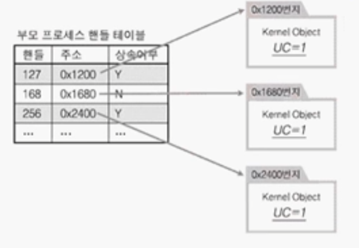
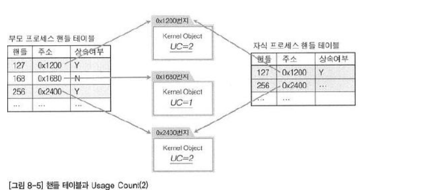

핸들 생성 과정
- 메일 슬롯으로 핸들 생성하는 과정

- 0x2400번지에 메일슬롯 정보를 저장하는 커널 오브젝트가 생성
- 256은 커널 오브젝트를 가리키는(지시하는) 용도로 사용되는 핸들
- 핸들 256을 통해서 0x2400번지에 할당되어 있는 메일슬롯에 접근이 가능하다.
- 그런데 위의 그림을 보았을 때 핸들 256이 0x2400번지에 존재하는 커널오브젝트를 의미한다는 정보가 없다.
- 그러한 정보들은 사실 핸들이 가리키는 핸들테이블에 저장되어 있다.
핸들 테이블
- 핸들 테이블이 포함된 생성 과정

- 핸들 테이블에 등록되어 있는 데이터들로 핸들256에 주소 0x2400번지가 저장되었음을 알 수 있다.
프로세스가 함수 호출을 통해서 리소스 생성을 요구한 결과로 핸들 정보를 얻을 경우 프로세스 자신에게 속해 있는 핸들 테이블에 해당 정보가 등록된다.
- 핸들 테이블
- 핸들 정보를 저장하고 있는 테이블로서
프로세스별로 독립적이다. 각각의 프로세스가 자신만의 핸들 테이블을 하나씩 구성하고 관리한다.
- 핸들 정보를 저장하고 있는 테이블로서
핸들의 상속
CreateProcess 함수를 호출하면 자식프로세스가 생성되고 자식 프로세스의 핸드 테이블도 생성한다.
CreateProcess 함수 호출시 전달되는 인자가 무엇이냐에 따라 부모 프로세스의 핸들 정보는 자식프로세스에게 상속될 수 있다.
자식 프로세스는 부모 프로세스의 핸들 테이블에 등록돼 있는 핸들을 상속받을 수 있지만, 필연적으로 상속받는 것은 아니다.
- 상속 여부에 따른 핸들의 상속

- 자식 프로세스가 부모 프로세스로부터 상속받은 핸들은 상속 여부에 대한 정보도 변경없이 상속된다.
- 위의 그림과 같이 자식에 상속받은 핸들들은 부모의 상속여부를 그대로 상속받았다.
핸들의 상속과 커널 오브젝트의 Usage Count
- 핸들과 UsageCount관계
커널 오브젝트를 참조하는 프로세스 개수만큼 커널 오브젝트의 Usage Count는 참조(공유)하는 프로세스의 수만큼 증가한다.- 그렇다면 커널 오브젝트를 참조하는 프로세스가 되기 위한 조건은 무엇인가?
->핸들을 얻은 프로세스가 커널 오브젝트를 참조하는 프로세스가 된다. - 프로세스가 핸들을 얻게 된다는 것은 무엇을 의미하는가?
-> 프로세스가 핸들을 얻게 되었다는 의미는핸들 테이블에 해당 핸들에 대한 정보가 갱신(추가) 되었음을 의미한다.
- CreateMailSlot함수의 호출을 통한 메일슬롯의 예시
1
2
3
4
5
* 과정
1. 메일슬롯 리소스 생성
2. 커널 오브젝트 생성
3. 핸들 정보가 핸들 테이블에 갱신
4. CreateMailSlot함수를 빠져 나오면서 핸들값 반환
프로세스가 핸들을 얻게 되었다고 한다면, 4번째에 초점을 맞추지만 실은 3번째에서 프로세스가 핸들을 얻게 되었다고 말할 수 있다.
즉,
핸들 테이블에 핸들에 대한 정보가 등록되면, 그 순간 핸들을 얻었다고 말할 수 있다.
- 핸들 테이블과 Usage Count(1)

UC (Usage Count)를 보면 부모 프로세스의 핸들 테이블에만 핸들 정보가 등록 되어 있는 관계로 1로 되어 있다.
CloseHandle를 호출한다면 UC가 0이 되면서 해당 커널 오브젝트와 리소스는 소멸된다.
- 핸들 테이블과 Usage Count(2)

- 자식프로세스를 생성하면서 상속했더니 핸들정보가 갱신되면서 UC가 2가 된 모습이다.
상속이 되기 위한 핸들의 조건
- 핸들의 상속 여부는 리소스가 생성되는 순간에 프로그래머에 의해서 결정된다
1
2
3
4
5
6
7
// 메일 슬롯의 예시
HANDLE CreateMailslot(
LPCTSTR lpName,
DWORD nMaxMessageSize,
DWORD lReadTimeout,
LPSECURITY_ATTRIBUTES lpSecurityAttributes, // 핸들 상속 여부
};
- CreateMailSlot에서는
4번째 인자를 통해서 상속여부를 결정할 수 있다.- LPSECURITY_ATTRIBUTES는 SECURITY_ATTRIBUTES 구조체의 포인터타입이다.
- 이 값에 NULL이 들어가면 전달되지 않고,구조체 변수의 주소값을 전달하면 상속될 수 있다.
- 대부분의 리소스 생성방식에 위와 같이 구조체의 멤버를 통해서 상속여부를 결정할 수 있다.
Pseudo 핸들과 핸들의 중복
현재 실행 중에 있는 프로세스 자신의 핸들을 얻는 방법으로써 GetCurrentProcess 함수가 있다.
이
함수를 통해 얻은 핸들을 가리켜 가짜 핸들(Pseudo 핸들)이라 한다.이렇게 얻은 핸들은 핸들 테이블에 등록되어 있지 않은 핸들이고, 현재 실행 중인 프로세스를 참조하기 위한 용도로 정의해 놓은, 약속된 상수가 반환되기 때문이다.
따라서 자식 프로세스로 상속되지 않으며, CloseHandle함수를 사용할 필요가 없다.